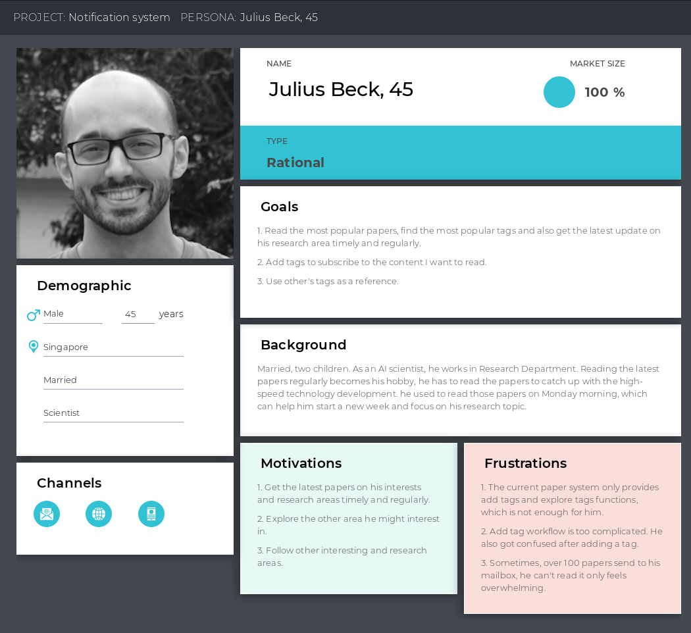

As a researcher, you need to read a lot of papers every day, whether it is the field you are researching or the latest and hottest topic at the moment, it is a huge attraction for them. As one of the largest paper publishing platforms, arXiv, every researcher browses and reads before or after work every day. arXiv publish high quality papers everyday, but the user experience is not good. The experience of subscribing to papers, browsing papers, reading papers, searching papers efficiently, etc. needs to be improved. Therefore, building a website with excellent user experience and a collection of the latest and hottest papers on the web is the problem that needs to be solved.
SEA | Jun 2021
User reseacher and UX designer
The easy-to-use platform for browsing, reading and subscribing to papers allows users to open the website daily, browse papers, search papers, read papers, and subscribe to papers on specific topics according to their needs and receive regular updates via email. This greatly enhances the efficiency of scientists.

Use the first-person perspective to describe the user's current situation and problems
Storyboarding helps itself to restore current user behavior, uncover user pain points, and help the team to understand users in a more visual and tangible way.

Abstraction of typical users
Through user interviews and basic data collection, target user personas are established. After this, the team can understand how a real user interacts with the product, the basic demographic characteristics, personality, motivations, pain points and expectations of the user.
Summarize the workflow, analyze user pain points, and outline the design direction
Based on the target user, interview results, and data analysis, we can build a user journey map for the target user, understand the steps that the user needs to go through to start using the product and complete a behavior, and break down the steps to find the user's behavior, emotions, touch points, pain points, and expectations. This allows us to better summarize the problems we need to solve and prioritize them.

Understand the design ideas of other products in the market
Based on the characteristics of the products and the problems that need to be focused on, the following four products were selected as competitive products:
and distinguished into four modules to be analyzed one by one.


Summarize the product modules, determine the basic layout
Before entering the detailed design, identifying the basic functional modules can help the team envision the basic architecture of the product in advance, and use it as the basis for the first time communication with PM about the product architecture to avoid unnecessary rework after entering the detailed design.

Refine functional modules
After the functional modules are defined, they are refined and the underlying information architecture is built to gradually flesh out the product infrastructure.

Combining all the previous analysis results, we output a detailed interaction design based on each functional module and each page in the map, including happy path, edge cases, covering every interaction detail as much as possible.

Collaborate with UI designers to output the final visual design.